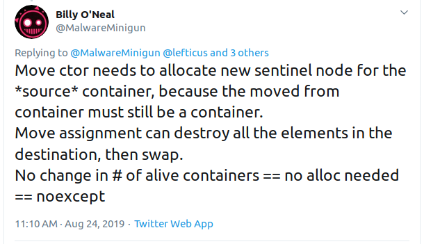

"Make no collection of it: let him show
His skill is in the construction."-- William Shakespeare, Cymbeline
I'm going to critique some code in this talk.
If it's like your code, please don't feel slighted.
I assure you that I write and have written plenty of suboptimal code.
Let's make code better together!
move something?vectorinitializer_listmap#include <cstdio> struct Arg {}; struct S { S() { puts("Default construct"); } S(Arg) { puts("Value construct"); } explicit S(int) { puts("Explicit value construct (1)"); } explicit S(int, int) { puts("Explicit value construct (2)");} ~S() { puts("Destruct"); } S(const S&) { puts("Copy construct"); } S(S&&) { puts("Move construct"); } S& operator=(const S&) { puts("Copy assign"); return *this; } S& operator=(S&&) { puts("Move assign"); return *this; } }; int main() { S s; }
move something?"Mov'd! In good time! Let him that mov'd you hither
remove you hence."-- William Shakespeare, The Taming of the Shrew
Are moves cheap or not?
vectorstd::vector<int> v1 = {1, 2, 3, 4, 5}; std::vector<int> v2 = std::move(v1);
What's in v1 after the move?
vectorIt must be destroyable.
What is sufficient? What is likely?
void WebClient::ProcessServerResponse(HttpMessage message) { // some stuff... m_result.extra = std::move(m_readBuffer); m_result.headers = std::move(message).headers; }
This code assumes that it's safe to do whatever comes later to a moved-from vector.
std::string s1 = "Greetings, planet"; std::string s2 = std::move(s1);
What's the moved-from state of s1?
std::string s3 = "Hello, world"; std::string s4 = std::move(s3);
What's the moved-from state of s3?
Moving from a string usually isn't any faster than copying from it.
(If you doubt this, ask yourself why the small string optimization exists in the first place.)
Moves only matter for objects on the heap.
void Context::Trigger(/* some args */) { using ResponseCallback = std::function</* some signature */>; // Make sure that it will trigger only once. const ResponseCallback callback = std::move(m_responseCallback); if (callback) { callback(errorCode, errorReason, payload, size, opaque); } }
Is this comment telling the truth?
Don't assume things are empty after a move.
Use exchange to make sure. Assigning an empty object is a trivial price for
safety.
m_result.extra = std::exchange(m_readBuffer, {}); const OnResponseCallback cb = std::exchange(m_responseCallback, nullptr);
Make your code safe for future small-buffer optimizations.
"If you will, lead these graces to the grave
And leave the world no copy."-- William Shakespeare, Twelfth Night, or What You Will
Q. What is the Return Value Optimization?
A. Perhaps the most important optimization the compiler does.
RVO Rules: what is returned has to be either:
RVO Ability: sometimes, the callee can't construct the object in-place.
You can't RVO a variable if you didn't get the chance to construct it in the first place.
std::string sad_function(std::string s) { s += "No RVO for you!"; return s; }
But the compiler will still move it. (Since C++11)
An rvalue-ref is not the same type.
std::string sad_function() { std::string s = "No RVO for you!"; return std::move(s); }
Don't return std::move(x) in most cases - you will get a move when you didn't
need anything!
Factory functions often can't RVO.
struct Base { ... }; struct Derived : Base { ... }; std::shared_ptr<Base> factory() { return std::make_shared<Derived>(); }
But will still move.
It has to be decidable at construction time.
std::string undecided_function() { std::string happy = "Hooray"; std::string sad = "Boo hoo"; if (getHappiness() > 0.5) return happy; else return sad; }
Again, return value will still be moved.
using M = std::map<std::string, int>; M build_map() { M m; m.insert(std::make_pair("Jenny", 8675309)); return m; }

Wake up!
And tell me if the upcoming code snippets will activate RVO.
const S will_it_rvo() { return S{1}; }
Yes.
S will_it_rvo(bool b) { if (b) return S{1}; else return S{0}; }
Yes. Even in debug builds.
S will_it_rvo(bool b, S s) { if (b) s = S{1}; return s; }
No (no opportunity).
S get_S() { return S{1}; } S will_it_rvo(bool b) { if (b) return get_S(); return S{0}; }
Yes (can elide multiple copies).
S will_it_rvo(bool b) { if (b) { S s{1}; return s; } return S{0}; }
Yes (Clang), no (MSVC/GCC).
S will_it_rvo(bool b) { S s{1}; if (b) return s; return S{0}; }
No. Possibly in future?
S will_it_rvo(bool b) { S s{1}; return b ? s : S{0}; }
No. (Against the rules.)
S get_S() { return S{1}; } S will_it_rvo(bool b) { return b ? get_S() : S{0}; }
Yes. (Returning temporary.)
S will_it_rvo() { S s{1}; s = S{2}; return s; }
Yes.
S will_it_rvo() { S s{1}; return (s); }
Yes.
unsigned long long Time() const override { auto ts = std::get<1>(std::move(Base::metrics_->GetDataPointAndTime())); return ts; }
Superfluous (potentially dangerous?) call to std::move.
NRVO is not guaranteed in debug mode. Better:
unsigned long long Time() const override { return std::get<1>(Base::metrics_->GetDataPointAndTime()); }
std::move(x)vector
Should you use push_back or should you use emplace_back?
How should you use them?
"Didst thou not say, when I did push thee back --
Which was when I perceived thee -- that thou camest
From good descending?"-- William Shakespeare, Pericles
push_back and emplace_backvoid push_back(const T& x); void push_back(T&& x); template <class... Args> reference emplace_back(Args&&... args);
What's the difference here?
std::vector<std::string> v; std::string s; // ... v.push_back(std::move(s)); v.emplace_back(std::move(s));
What's the difference here?
std::vector<std::string> v; std::string s; v.push_back(std::move(s)); std::string& last_s = v.emplace_back(std::move(s));
What's the difference here?
std::vector<std::string> v; const char* s = "Hello"; v.push_back(s); v.emplace_back(s);
Default in-place construct.
std::vector<S> v; // first default-construct in the vector S& s = v.emplace_back(); // now mutate s // ...
emplace_back takes a parameter pack. Parameter packs can be empty.
In-place construct with explicit constructor.
// recall: S has an explicit constructor from int std::vector<S> v; // push_back can't do explicit construction v.push_back(1); // compiler error! // explicit construction is no problem for emplace_back S& s = v.emplace_back(1);
emplace_back does perfect forwarding. It can call explicit constructors.
Recall: our S class has a constructor from Foo, and an explicit constructor
from int.
std::vector<S> v; std::array<Foo, 3> a = { Foo{}, Foo{}, Foo{} }; v.reserve(a.size()); std::copy(a.cbegin(), a.cend(), std::back_inserter(v));
What does back_insert_iterator do here?
What if we have an array of int?
std::vector<S> v; std::array a = { 1,2,3,4,5 }; v.reserve(a.size()); std::copy(a.cbegin(), a.cend(), std::back_inserter(v));
Oops. The compiler is angry at us.
OK, no problem, right?
std::vector<S> v; std::array a = { 1,2,3,4,5 }; v.reserve(a.size()); std::transform(a.cbegin(), a.cend(), std::back_inserter(v), [] (int i) { return S{i}; });
back_emplacertemplate <typename Container> struct back_emplace_iterator { explicit back_emplace_iterator(Container& c) : c(&c) {} back_emplace_iterator& operator++() { return *this; } back_emplace_iterator& operator*() { return *this; } template <typename Arg> back_emplace_iterator& operator=(Arg&& arg) { c->emplace_back(std::forward<Arg>(arg)); return *this; } private: Container* c; };
back_emplacer// pre-CTAD maker function template <typename Container> auto back_emplacer(Container& c) { return back_emplace_iterator<Container>(c); }
back_emplacer
What if we have an array of int?
std::vector<S> v; std::array a = { 1,2,3,4,5 }; v.reserve(a.size()); std::copy(a.cbegin(), a.cend(), back_emplacer(v));
std::vector<std::string_view> tokens; // ... std::string_view token = /* stuff */; tokens.emplace_back(std::move(token));
context->m_result->m_headers.emplace_back(std::string(headerData, numBytes));
A superfluous move! Better:
context->m_result->m_headers.emplace_back(headerData, numBytes);
Don't explicitly call a constructor with emplace_back.
vector of pair = map
Sometimes, we use a sorted vector of pair as a replacement for map.
What do you do if part of your pair has a multi-argument constructor?
struct Foo { Foo(int, std::string, double); }; std::vector<std::pair<int, Foo>> v; // this is very common! v.push_back(std::make_pair(1, Foo{42, "hello", 3.14})); // this is no better v.emplace_back(std::make_pair(1, Foo{42, "hello", 3.14})); // how can we do better? v.emplace_back( /* what here? */ );
piecewise_construct to the rescue!
pair has a constructor that will handle your multi-argument constructor.
template <class... Args1, class... Args2> pair(piecewise_construct_t, tuple<Args1...> first_args, tuple<Args2...> second_args); template <class... Types> constexpr tuple<Types&&...> forward_as_tuple(Types&&... args) noexcept;
piecewise_construct_t is a tag type.
piecewise_constructstruct Foo { Foo(int, std::string, double); }; std::vector<std::pair<int, Foo>> v; // instead of this... v.push_back(std::make_pair(1, Foo{42, "hello", 3.14})); // ...we can do this v.emplace_back( std::piecewise_construct, std::forward_as_tuple(1), // args to int "constructor" std::forward_as_tuple(42, "hello", 3.14))); // args to Foo constructor
Perfect forwarding and in-place construction.
push_back is perfectly fine for rvaluesemplace_back only when you need its powers
emplace_backpiecewise_construct / forward_as_tuple to forward args through pairinitializer_list"I fear these stubborn lines lack power to move."
-- William Shakespeare, Love's Labours Lost
initializer_list?When you write:
std::vector<int> v{ 1,2,3 };
It's as if you wrote:
const int a[] = { 1,2,3 }; std::vector<int> v = std::initializer_list<int>(a, a+3);
initializer_list has const storage, 1template <int... Is> auto f() () { return std::initializer_list<int>{ Is... }; } void foo() { for (int i: {1,2,3}) cout << i << '\n'; } void bar() { for (int i: f<1,2,3>()) cout << i << '\n'; }
initializer_list has const storage, 2unique_ptr<int> v = { make_unique<int>(1), make_unique<int>(2) };
That also means move can't work.
const std::unique_ptr<int> a[] = { std::make_unique<int>(1), std::make_unique<int>(2) }; std::vector<std::unique_ptr<int>> v = std::initializer_list<std::unique_ptr<int>>(a, a+3);
I'd much rather write:
std::vector<S> v = { S{1}, S{2}, S{3} };
(3 constructs, 3 copies, 3 destructs)
Than:
std::vector<S> v; v.reserve(3); v.emplace_back(1); v.emplace_back(2); v.emplace_back(3);
(3 constructs)
std::vector<S> v = { S{1}, S{2}, S{3} };
(3 constructs, 3 copies, 3 destructs)
S a[3] = { S{1}, S{2}, S{3} }; std::vector<S> v(std::make_move_iterator(std::begin(a)), std::make_move_iterator(std::end(a)));
(3 constructs, 3 moves, 3 destructs)
Is an in-place constructor for vector. (For everything?)
template <class... Args> explicit vector(in_place_t, Args&&... args);
Future (?) proposal by Simon Brand.
std::unordered_set<std::string> kKeywords = { "alignas", "alignof", "and", "and_eq", "asm", "auto", "bitand", "bitor", "bool", "break", "case", "catch", "char", "class", "compl", "const", "constexpr", "const_cast", "continue", "decltype", "default", "delete", "do", "double", "dynamic_cast", "else", "enum", "explicit", "extern", "false", "float", "for", "friend", "goto", "if", "inline", "int", "long", "mutable", "namespace", "new", "noexcept", "not", "not_eq", "NULL", "operator", "or", "or_eq", "private", "protected", "public", "register", "reinterpret_cast", "return", "short", "signed", "sizeof", "static", "static_assert", "static_cast", "struct", "switch", "template", "this", "thread_local", "throw", "true", "try", "typedef", "typeid", "typename", "union", "unsigned", "using", "virtual", "void", "volatile", "wchar_t", "while", "xor", "xor_eq" };
std::string is an interesting case here. We intuit/are taught:
Delay construction, allocation, etc. as late as possible.
But that might hurt us with std::string.
"Initializer Lists are Broken, Let's Fix Them" – Jason Turner, C++Now 2018
string vs const char*SBO-strings http://quick-bench.com/5dPSX8rx-R8_BIUYbYOp6DcqhAc
Non SBO-strings 1: http://quick-bench.com/mr6ZIQ8Jy0ghe1scBcTznYF2s5w
Non SBO-strings 2: http://quick-bench.com/vzlG11LwZN-uMAKdK8X1XgRuaWs
initializer_list only for literal typesarray and manually movinginitializer_list for anything that'll get run more than
oncein_place_t constructor on vector ?std::forward from std::initializer_list)?map(or other associative container)
It's a bit complicated.
"A plague upon it! I have forgot the map."
-- William Shakespeare, Henry IV, Part I
initializer_list with map
It's perfectly possible to initialize a map with an initializer_list.
// recall S has an implicit constructor from Foo using M = std::map<int, S>; M m { {0, Foo{}} }; // how many constructs/copies/moves?
Use aggregate initialization with pair.
Is this good?
https://gist.github.com/elbeno/609e929ef6898f09e96a#file-for_each_args-cpp-L55
// call an N-ary function on each lot of N args passed in template <size_t N, typename F, typename... Ts> void for_each_n_args(F&& f, Ts&&... ts);
using M = std::map<int, S>; M m; for_each_n_args<2>( [&] (auto&& k, auto&& v) { m.emplace(forward<decltype(k)>(k), forward<decltype(v)>(v)); }, 0, 1); // we can call explicit constructor
If you know the types, you can probably write the lambda in a less ugly way.
using M = std::map<int, S>; M m; for_each_n_args<3>( [&] (auto&& k, auto&&... v) { m.emplace( std::piecewise_construct, std::forward_as_tuple(std::forward<decltype(k)>(k)), std::forward_as_tuple(std::forward<decltype(v)>(v)...); }, 0, 1, 2); // explicit multi-arg value constructor
Everything constructed in place.
How about putting things into an existing map?
operator[]// recall S has an implicit constructor from Foo // but an explicit constructor from int using M = std::map<int, S>; M m; m[0] = S{1}; m[1] = Foo{};
How many constructs/moves/copies?
insert// recall S has an implicit constructor from Foo // but an explicit constructor from int using M = std::map<int, S>; M m; // pair<iterator,bool> insert(value_type&& value); // template <class T1, class T2> // pair<V1,V2> make_pair(T1&& t, T2&& u); // alternatives: m.insert(std::make_pair(0, S{1})); m.insert(std::pair<int, S&&>(0, S{1})); m.insert(std::make_pair(0, 1));
How many constructs/moves/copies?
emplaceEnter the wonderful C++11 panacea that is move semantics.
// recall S has an implicit constructor from Foo // but an explicit constructor from int using M = std::map<int, S>; M m; // template <class... Args> // pair<iterator,bool> emplace(Args&&... args); // this was 2 moves // m.insert(make_pair(0, S{1})); // much better, right? m.emplace(std::make_pair(0, S{1}));
You guessed it…
emplace, better usage// recall S has an implicit constructor from Foo // but an explicit constructor from int using M = std::map<int, S>; M m; // template <class... Args> // pair<iterator,bool> emplace(Args&&... args); m.emplace(0, 1); // no moves, just a construct
emplace problemWhat do we do when we want to default-construct the value?
using M = std::map<int, S>; M m; m.emplace(0); // default construct S please!
error 2665: std::pair<const _Kty,_Ty>::pair: none of the 2 overloads could
convert all the argument types
emplace problemWhat do we do when we want to default-construct the value?
using M = std::map<int, S>; M m; m[0]; // default construct S please!
ಠ_ಠ
emplace with zero-arg constructor
Our old friend piecewise_construct can help.
using M = std::map<int, S>; M m; m.emplace(std::piecewise_construct, std::forward_as_tuple(0), std::forward_as_tuple()); // default construct S please!
Tuples are allowed to be empty!
Yes, we can also use this for more-than-one-arg constructors.
// explicit ClientIdRecord( // const string& clientId, const ProcessId& clientProc, const ProcessId& serverProc); using Storage = std::unordered_set<ClientIdRecord>; Storage m_storage; m_storage.emplace(inClientId, clientProc, serverProc);
Perfectly fine as far as emplace usage.
Then we want to change the unordered_set to an unordered_map.
// explicit ClientIdRecord( // const string& clientId, const ProcessId& clientProc, const ProcessId& serverProc); using Storage = std::unordered_map<std::string, ClientIdRecord>; Storage m_storage; m_storage.emplace( std::make_pair(inClientId, ClientIdRecord(inClientId, clientProc, serverProc)));
Is this optimal?
using Storage = std::unordered_map<std::string, ClientIdRecord>; Storage m_storage; m_storage.emplace(std::piecewise_construct, std::forward_as_tuple(inClientId), std::forward_as_tuple(inClientId, clientProc, serverProc));
Use piecewise_construct again.
emplace problem 2
What do you do if you want to emplace the result of a function call?
S get_S() { return S{1}; }
using M = std::map<int, S>; M m; m.emplace(0, get_S());
How can we avoid the move?
Is it possible to in-place construct here?
We can't avoid evaluating the function call before calling emplace.
But, we can control when the result of the function call becomes an S.
template <typename F> struct with_result_of_t { using T = std::result_of_t<F()>; explicit with_result_of_t(F f) : f(std::move(f)) {} operator T() { return f(); } private: F f; }; // prior to CTAD template <typename F> inline auto with_result_of(F&& f) { return with_result_of_t<F>(std::forward<F>(f)); }
emplace problem 2S get_S() { return S{1}; } using M = std::map<int, S>; M m; m.emplace(0, with_result_of([] { return get_S(); })); // m.emplace(0, with_result_of(get_S));
Compilers are really good at optimizing single-use lambdas.
insert_or_assign
Of course, insert / emplace and operator[] actually do different things.
What do you do if you want to insert, or assign if the element is already there?
template <class M> pair<iterator, bool> insert_or_assign(const key_type& k, M&& obj); template <class M> pair<iterator, bool> insert_or_assign(key_type&& k, M&& obj);
Introduced with C++17.
insert_or_assignusing M = std::map<int, S>; M m; m.insert_or_assign(0, Foo{}); // implicit construction - fine // m.insert_or_assign(1, 1); // explicit construction - error! m.insert_or_assign(1, with_result_of([]{ return S{1}; })); // RVO
We now have at least 3 different interface styles for putting things in a
map…
insert takes a value_type (aka pair)emplace takes a parameter packinsert_or_assign takes a key and a valueusing M = std::map<int, S>; M m; M m2{{1, Foo{}}}; // pretend initialization becomes efficient & simple m.insert(m2.extract(1));
template <typename K, typename V> typename LRUCache<K, V>::EntryPtr LRUCache<K, V>::Insert(const K& key, V value) { // Is the key already present? if (m_entries.find(key) != m_entries.end()) return nullptr; // Is the cache full? if (m_entries.size() == m_capacity) Evict(1); // Insert the new value. EntryPtr e = std::make_shared<Entry>(key, std::move(value)); Append(e.get()); m_entries[key] = e; return e; }
// Insert the new value. auto [it, _] = m_entries.emplace(key, with_result_of([&] { return std::make_shared<Entry>(key, std::move(value)); }); Append(it->second.get()); return it->second;
Yes, C++ is complicated.
for_each_n_argsinsert with make_pair and implicit construction
emplace but beware of explicit constructionpiecewise_construct for other than single-arg constructionoperator[]insert_or_assign when it's availablewith_result_of
Like optional, variant, any.
"There's more depends on this than on the value."
-- William Shakespeare, The Merchant of Venice
optional and friendstemplate <class... Args> constexpr explicit optional(in_place_t, Args&&... args); template <class T, class... Args> constexpr explicit variant(in_place_type_t<T>, Args&&... args); template <size_t I, class... Args> constexpr explicit variant(in_place_index_t<I>, Args&&... args); template <class ValueType, class... Args> explicit any(in_place_type_t<ValueType>, Args&&... args);
optional constructionimplicit constructor
std::optional<S> opt = Foo{};
explicit constructor (naive method)
std::optional<S> opt = S{1};
explicit constructor (in-place method)
std::optional<S> opt(std::in_place, 1);
optional assignmentimplicit constructor
std::optional<S> opt; opt = Foo{};
explicit constructor (naive method)
std::optional<S> opt; opt = S{1};
explicit constructor (in-place method)
std::optional<S> opt; opt.emplace(1);
optional recommendationsin_place_t constructorexplicit constructionemplace for assignmentstd::optional<S> opt(std::in_place, 1); opt.emplace(2);
variant constructionimplicit constructor
std::variant<int, S> v = Foo{};
explicit constructor (naive method)
std::variant<int, S> v = S{1};
explicit constructor (oops method)
std::variant<int, S> v = 1;
variant constructionRecommendation: use either of these two constructions.
std::variant<int, S> v(std::in_place_type<S>, 1);
std::variant<int, S> v(std::in_place_index<1>, 1);
variant assignmentSimilar story to construction.
std::variant<int, S> v; v = Foo{}; // fine v = S{1}; // constructs a temporary v = 1; // oops
variant danger!
Implicitly-typed variant construction/assignment can be dangerous.
int main() { std::variant<bool, std::string> v = "Hello"; std::cout << "index is " << v.index() << '\n'; }
What does this output?
variant assignmentstd::variant<int, S> v; // template <class T, class... Args> // T& emplace(Args&&... args); v.emplace<S>(1); // S{1}
std::variant<int, S> v; // template <size_t I, class... Args> // variant_alternative_t<I, variant>& emplace(Args&&... args); v.emplace<1>(1); // S{1}
variant recommendationsin_place_type or in_place_index constructorsemplace<T> or emplace<I>operator= (except actual variant-to-variant)"Share the advice betwixt you; if both gain all,
The gift doth stretch itself as 'tis receiv'd,
And is enough for both."-- William Shakespeare, All's Well That Ends Well
Think about copies and moves.
Moves aren't free, and may not be cheap.
Usually, in-place construction is preferable. And it is nearly always possible.
Know how RVO works, and check that the compiler is doing it when you think it is.
Beware initializer_list.
Feel free to ping me with any questions, any time.